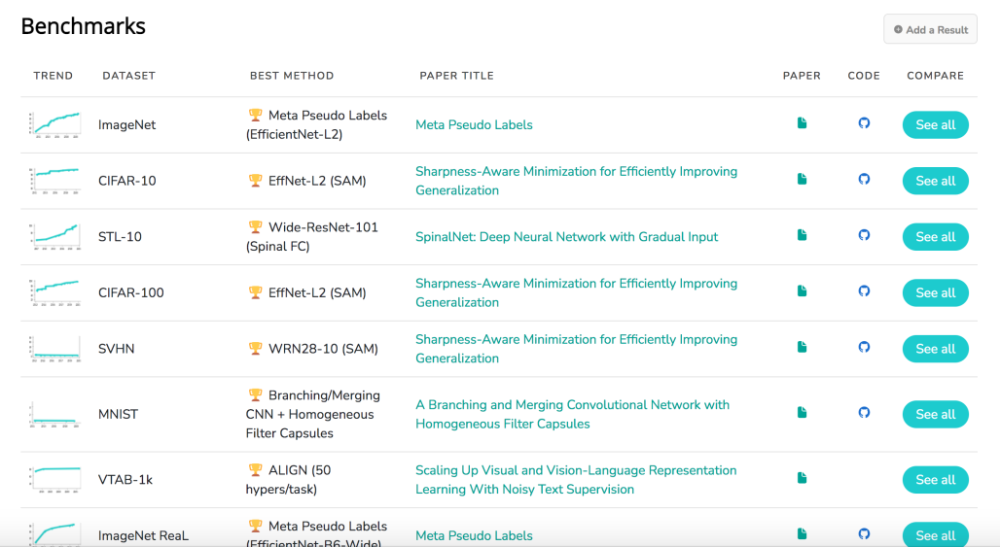

一、Dataset Benchmark
paperswithcode可能需要开代理（如果在国内的话）
CIFAR-10: https://paperswithcode.com/sota/image-classification-on-cifar-10 CIFAR-100: https://paperswithcode.com/sota/image-classification-on-cifar-100 其他常见的实验型数据集：https://paperswithcode.com/task/image-classification

二、调参相关
调参的基本步骤（按优先级）：
-
确定任务，不同的任务做法是不一样的，哪怕都是图像分类，人脸识别、说话人识别、粗粒度图像分类、细粒度图像分类、小图像分类都是不一样的调参套路，第一步确认任务。
-
确定任务work相关的网络结构，这个是最主要的影响，如Densenet往往在粗粒度图像分类上较好，但在人脸识别上效果往往较差。不同族的网络结构总是有自己的优势，哪怕VGG有时候也在回归任务上效果比其他网络更好。
-
图像预处理与增强方法，略。
-
确定网络结构相关的先进变种，如Desnet，最早期的Densenet121-190可以简单的作为baseline，进一步引入变种模块，如Resnet引入se、group模块等，Dense引入BC。
-
确认损失函数，如人脸任务采用ArcFace、粗粒度识别Softmax、细粒度识别Center/Contrastive/Triplet、不平衡类别Focal等。
-
重要的超参数与重要的训练技巧（tricks），包括学习率衰减方式（梯度衰减、CosDecay、CosRepeatDecay等）、学习率值、WarmUp、带参数层初始化分布、BS、Weights Decay。
-
次要的超参数与训练技巧，包括部分层卷积核数量大小、FC层映射值、with bias等。
-
其他指导性经验，如一开始可以不上大网络，先用ResNet34/101做出来一个合适的Baseline，引入后面足够的tricks，尽可能在ResNet上做到好的效果，然后再替换网络做Benchmark，会好很多，否则容易陷入调参困境和后续准确率乏力的问题。这主要源于ResNet具有很好的调参性与大量的调参经验，所以一般我们的想法以这个为Baseline作为基准比较，否则网络结构变化的情况下是无法很好的比较最后的效果，再替换成inception_resnet_v2自然会更好，但那个最好在后期使用。而在目标检测任务，我们的Baseline往往以Yolov3或5为主要对比骨架。
一些重要的网站：
- 官方Keras实现案例，包含各个基本Backbone的top1和top5精度，https://keras.io/api/applications/
- 16年前后的重要分类网络原始论文都具备ResNet的基本调参技巧说明。
- 18年的调参技巧：https://arxiv.org/abs/1812.01187
- （带细节的）各个网络结构在ImageNet和Cifar上的精度：https://github.com/bearpaw/pytorch-classification
三、一个整体过程
第一步，搭建网络计算流程。一般来说，我们首先先把网络的计算图搭建好，也就是一套数据流动的计算流程。类似于修筑沟渠，也就是前几页文档中写的诸如alexnet、resnet命名的函数，输入input shape和class number，输出一个model的这种。
第二步，设置学习率。学习率是最重要的超参数，所以需要优先的设置，一般在早期，可以参考其他人在类似任务上的学习率设置，在后期会逐渐形成经验。学习率有几种下降模式，采用的最多的是梯度下降，也就是训练了多少个epoch之后，下降为多少；另外几种学习率的模式也是经常用到的，比如余弦衰减（CosineDecay），余弦重复衰减（CosineDecayRepeat）等等。
比如对梯度衰减：
def schedule(epoch, lr):
if epoch < 10:
return lr
else:
return lr * tf.math.exp(-0.1)
...
learning_rate_scheduler = tf.keras.callbacks.LearningRateScheduler(schedule, verbose=0)
model.fit(x_train, y_train, callbacks=[learning_rate_scheduler])
会发现tensorflow-2.x的版本里，有三个概念，一个是定义的schedule函数，表明了lr和epoch的关系；一个是接受前述函数的调度器scheduler，只有两个参数，接收一个调度函数，并且是否在训练的时候可视化（verbose）；第三个就是在训练的时候，在callbacks里将第二个调度器加上。
很容易发现后两者基本不需要变动，往往只需要变动第一个schedule函数，除了自己写以外，tensorflow也提供了一些写好的其他版本的学习率下降，比如：
1、CosDecay：https://www.tensorflow.org/api_docs/python/tf/keras/experimental/CosineDecay?hl=en 2、CosDecayRestarts: https://www.tensorflow.org/api_docs/python/tf/keras/experimental/CosineDecayRestarts?hl=en 3、LinearCosDecay: https://www.tensorflow.org/api_docs/python/tf/keras/experimental/LinearCosineDecay?hl=en 4、NoisyLinearCosDecay: https://www.tensorflow.org/api_docs/python/tf/keras/experimental/NoisyLinearCosineDecay?hl=en
这些都可以去尝试，比如一个示例就是：
...
initial_learning_rate = 0.1
decay_steps = 130
schedule = tf.keras.experimental.NoisyLinearCosineDecay(
initial_learning_rate, decay_steps, initial_variance=1.0, variance_decay=0.55,
num_periods=0.5, alpha=0.0, beta=0.001, name=None
)
learning_rate_scheduler = tf.keras.callbacks.LearningRateScheduler(schedule, verbose=0)
model.fit(x_train, y_train, callbacks=[learning_rate_scheduler])
第三步：设置Batch Size。Batch size是和【显存】相关的，在网络结构已知的情况下，Batch size越大，占用的显存越大。这个一般设置成2^n，不宜超过三位数。一般来说如果图像很小，且显存支持的情况下，可以从256开始，如果出现报错OOM（Out of memory），则需要调低Batch Size。比如cifar一般128，64就可以了。
Batch size也和训练的时间相关，这个越大，训练的速度越快。所以合理的设置Batch size，最好能爬满显存，这样速度又快，又很容易训练充分。
第四步：构建一个Baseline网络。在上述三步的前提下，可以先将三个进行很好的调整，再进行后续的。这里格外思考一下第一步的网络结构是否能够适配数据的shape，比如cifar和imagenet的数据缩减的步数是不一样的。然后可以思考一下学习率是否还有调整的空间，BS是不是设置的比较好了，网络是不是可以正常的跑起来且没有什么问题了。这些问题解决后，出一个基准的Baseline，在后续的调整过程中，学习率和BS暂时都不要去动它。并且这里做一个备份，从后续开始都是零碎且繁琐的改动。
第五步：调整网络的参数初始化方式。CNN中带参数层，只有卷积层和全连接层，而标准化层和池化层是不带参数的。对卷积层和全连接层的参数初始化，如果完全随机的话很容易出各种预想不到的问题，而且网络最终的结果也很依赖初始化的运气，所以这里可以设置参数初始化方式让网络保持稳定。
在TensorFlow中，对Conv2D和Dense都带了一个参数，叫做kernel_initializer。
Conv2D: https://www.tensorflow.org/api_docs/python/tf/keras/layers/Conv2D?hl=en
Dense:https://www.tensorflow.org/api_docs/python/tf/keras/layers/Dense?hl=en
在上述的API说明中，这个初始化方式不设置的话默认为'glorot_uniform'。那么参数初始化的方式在TensorFlow的说明在：https://www.tensorflow.org/api_docs/python/tf/keras/initializers
可以看到，有至少二十种初始化方式，而我们往往用的较多的是："he_normal"和默认。 he_normal在ResNet中用的较多。
第六步：调整正则化方式和参数。由于训练过程中很容易发生“过拟合”（Overfitting），所以可以【对带参数层】设置一个正则化参数，和上面的初始化差不多，对Conv2D和Dense都带了一个参数，叫做kernel_regularizer。
正则的话需要一个「程度」的说明，如果程度越大，那么训练的时候会抑制参数变化的力量越大，这个程度我们用weight_decay来描述。
在上一节中我们介绍了ResNet一个核心结构的写法，里面出现了weight_decay和kernel_regularizer，按照这样的形式写就可以了。weight_decay一般设置成5e-4和1e-4。
def identity_block(input_tensor, kernel_size, filters, weight_decay=5e-4):
x = layers.Conv2D(filters1, kernel_size,
padding='same',
kernel_initializer='he_normal',
kernel_regularizer=l2(weight_decay))(input_tensor)
x = layers.BatchNormalization()(x)
x = layers.Activation('relu')(x)
x = layers.Conv2D(filters2, kernel_size,
padding='same',
kernel_initializer='he_normal',
kernel_regularizer=l2(weight_decay))(x)
x = layers.BatchNormalization()(x)
# x = layers.Activation('relu')(x)
x = layers.add([x, input_tensor])
x = layers.Activation('relu')(x)
return x
第七步：调整网络内部参数。如网络内部的卷积核数量、卷积核的大小等，这些一般针对数据去调整即可。如果分类的图像，尺度占图像比较小，这样最上面一层的卷积层kernel size可以调大。如果分类的图像，类别之间的差距没有那么的大，比如人脸图像，卷积层的filters可以调大。
第n步：对数据的处理。要想达到好的准确率，对数据的处理是时刻不能忘记的，所以它并不在第几个步骤，应该是贯穿整个流程里的任何的节点。对数据的处理一般有这些操作：
（1）训练时数据增强，这个暂时先不讲。
（2）数据预处理：一般都是根据训练集的方差和均值进行变换，预处理对每个通道进行预处理。
（3）数据集修改：例如原来的数据集类别的比例不均衡，某个类10个图像，某个类1000个图像，这个时候可以对数据集进行修改，尽量保证均衡之类。